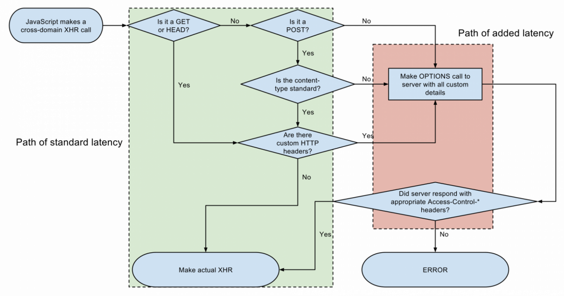

Use WebSockets where appropriate (i.e. for highly interactive apps)
Employ JSONP/CORS to bypass the same-origin policy
saync vs. defer As preflight checks add a second roundtrip, they can effectively double your latency.
a cross-domain XHR call
1. Write your APIs and serve your content using only HEAD, GET, POST, Accept, Accept-Language, Content-Language, and Content-Type as they don’t initiate preflight request
2. Cache the preflight responses to decrease the subsequent checks

⚠️ 请先安装一款邮件软件（部分浏览器可能不支持，请使用设备默认浏览器打开本页面）